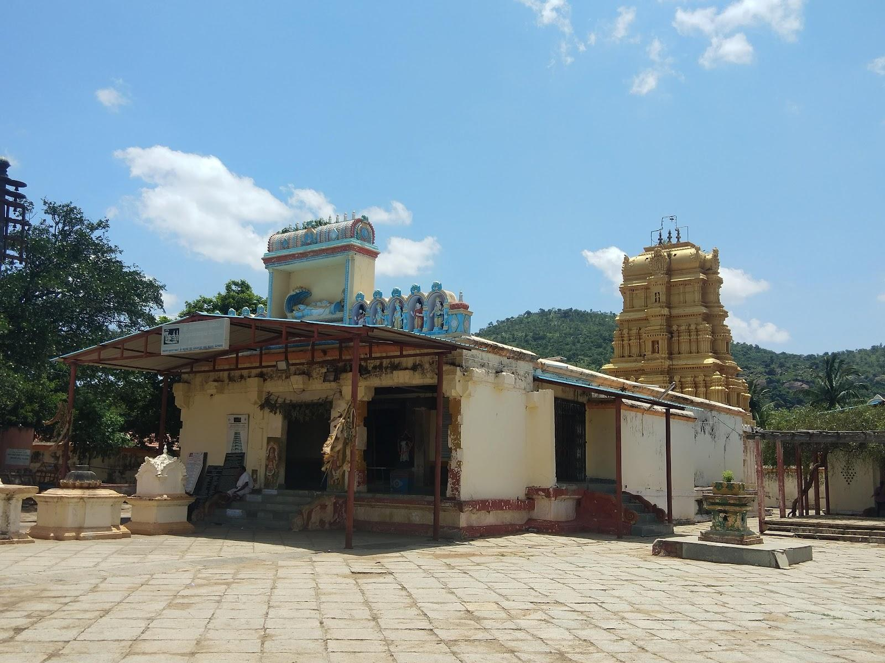
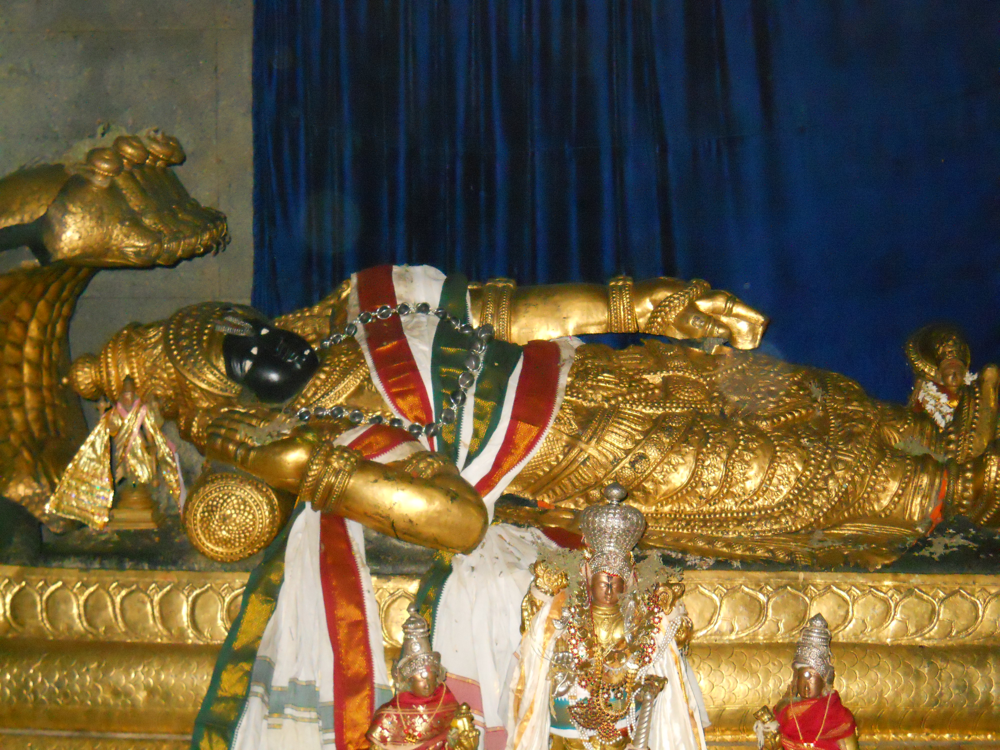

Madhyaranga Temple
Ancient Sri Ranganathaswamy Temple situated on the banks of River Kaveri at Shivanasamudra.
Madhyaranga Temple is one of the famous Pancharanga Kshetras dedicated to Lord Ranganatha (Lord Vishnu). Located at Shivanasamudra in Kollegal Taluk of Chamarajanagar District, the temple is surrounded by the beautiful River Kaveri. The peaceful atmosphere, historic architecture and nearby waterfalls make it one of the most popular religious and tourist destinations in the district.
Loading...
Shivanasamudra, Kollegal Taluk, Chamarajanagar District, Karnataka
6:30 AM – 12:30 PM
4:30 PM – 8:30 PM
Free Entry
Lord Ranganatha (Lord Vishnu)
Vaikuntha Ekadashi, Brahmotsava, Sri Krishna Janmashtami
| Place | Distance |
|---|---|
| Kollegal | 32 km |
| Chamarajanagar | 68 km |
| Mysuru | 75 km |
| Bengaluru | 135 km |
Distance: 2 km
⭐⭐⭐⭐☆
Distance: 3 km
⭐⭐⭐⭐☆
Distance: 5 km
⭐⭐⭐☆☆
South Indian Meals
Veg & Non-Veg Available
Breakfast, Lunch & Dinner

